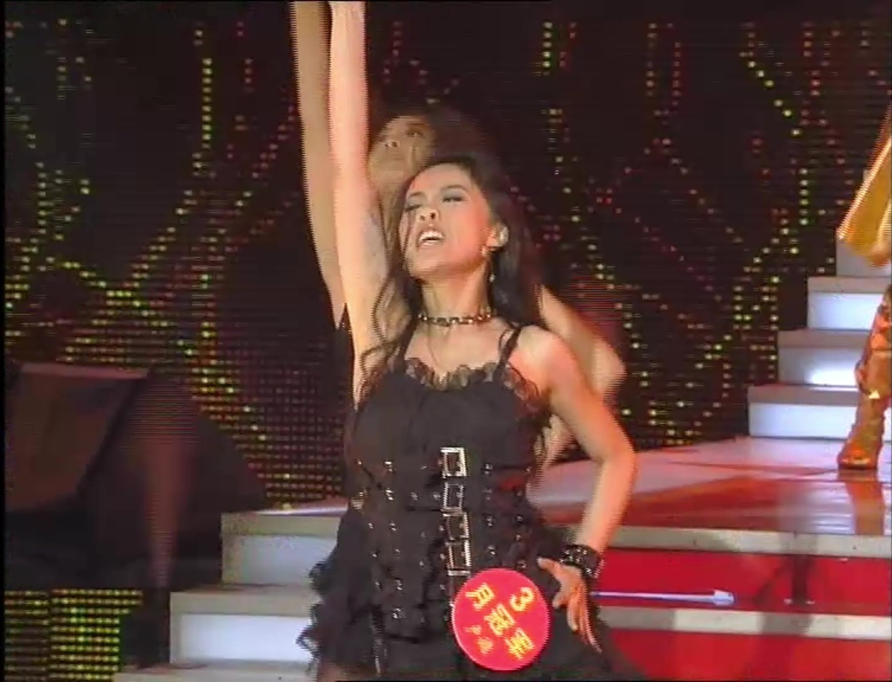
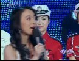
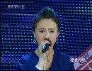
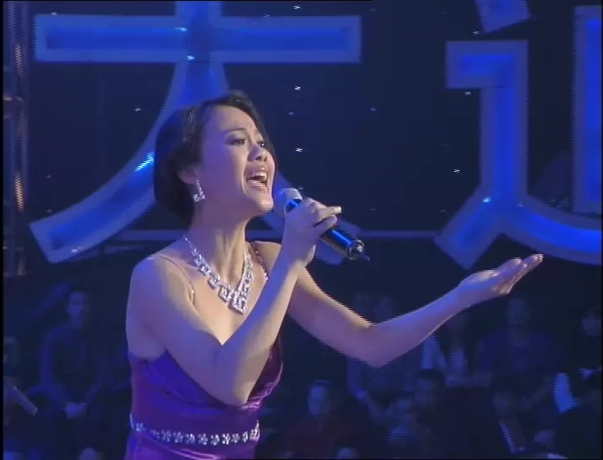
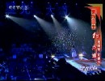
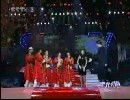
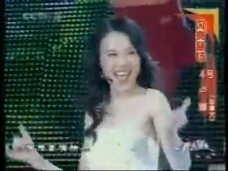
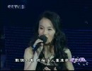
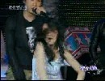

《星光大道》 WILD DANCE

《星光大道》 HERO
《星光大道》 月赛冠军卢婧

《星光大道》 卢婧版呛声
《星光大道》 来自福建的加拿大人
《星光大道》 歌曲串烧

《星光大道》 老毕被夸像被骂

《星光大道》 爱凭才会赢

《星光大道》 OPEN ARMS

《星光大道》 怀旧金曲串烧

《星光大道》 老毕、卢婧版《泰坦尼克》
《星光大道》 嘉宾点评
《星光大道》 周冠军

《星光大道》 SUNNY DAY

《星光大道》 Greatest Love of All

《星光大道》 舞蹈表演
